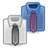

GNOME Shell
 Die GNOME Shell
Die GNOME Shell  ist die aktuelle (dritte) Generation des GNOME-Desktops. Sie definiert viele Interaktionen mit dem Desktop neu, wie Programme starten, Dokumente öffnen und vieles mehr. In den meisten Linux-Distributionen ersetzt sie ab GNOME 3.0 sowohl Funktionen des Fenstermanagers als auch das GNOME Panel. Sie kann auch Ersatz für das von Ubuntu präferierte Unity sein, das Compiz als Composite- und Fenstermanager einsetzt. Für grafische Effekte kommt in der GNOME Shell das neue OpenGL-basierte Clutter-Framework
ist die aktuelle (dritte) Generation des GNOME-Desktops. Sie definiert viele Interaktionen mit dem Desktop neu, wie Programme starten, Dokumente öffnen und vieles mehr. In den meisten Linux-Distributionen ersetzt sie ab GNOME 3.0 sowohl Funktionen des Fenstermanagers als auch das GNOME Panel. Sie kann auch Ersatz für das von Ubuntu präferierte Unity sein, das Compiz als Composite- und Fenstermanager einsetzt. Für grafische Effekte kommt in der GNOME Shell das neue OpenGL-basierte Clutter-Framework mutter (mETACITY + CLutter) zum Einsatz.
Ab Ubuntu 13.04 steht mit Ubuntu GNOME eine offizielle Ubuntu-Variante mit GNOME bzw. der GNOME Shell zur Verfügung (siehe Ubuntu-GNOME Installation).
Unterartikel¶
Nachfolgend ist eine Übersicht aller Artikel aufgeführt, die sich mit der Desktop-Oberfläche GNOME Shell befassen. Diese sollen dabei einen Einblick in die Bedienung, Installation, Konfiguration und die Erweiterbarkeit der GNOME Shell liefern. Daher erfolgt die Aufteilung dabei nach den möglichen Fragestellungen, die Schlagworte geben Hinweise zum Inhalt des Artikels. Durch Anklicken des jeweiligen  Begriffs gelangt man zum Artikel.
Begriffs gelangt man zum Artikel.
| Artikelserie GNOME Shell | |
 Bedienung | Vorstellung des Bedienkonzeptes der GNOME Shell. |
Installation | Installation der GNOME Shell |
 Tastaturkürzel | Übersicht und Einstellungen zur Bedienung mit der Tastatur |
Erweiterungen | Überblick über die Möglichkeiten den Funktionsumfang der GNOME Shell zu erweitern. |
|  Design | Das Aussehen der GNOME Shell nach seinen Wünschen anpassen. |
 Alternativer Desktop | Möglichkeiten den GNOME 2.X Desktop weiter zu verwendet oder der GNOME Shell das Aussehen davon zu verleihen. |
 Einstellungen | Das Verhalten und Aussehen der GNOME Shell und des gesamten System anpassen. |
Interna | Die GNOME Shell mit Hilfe einer JavaScript-Konsole inspizieren. |
Problembehebung¶
Oberfläche neustarten¶
Sollte sich die Oberfläche aufhängen oder plötzlich spinnen, hilft es oft schon, sie neuzustarten, ohne das die laufenden Programme beendet werden müssen. Falls es noch möglich ist, kann das mittels
Alt +
F2 und Eingabe von r und
⏎ geschehen oder in einem Terminal mit dem Befehl
gnome-shell -r
Ist das Öffnen eines Terminals nicht mehr möglich, kann man sich in einer virtuelle Konsole anmelden und dort den folgenden Befehl nutzen:
DISPLAY=:0 gnome-shell -r
Sollte dies nicht funktionieren, muss eventuell statt der 0 eine 1 oder noch eine andere Nummer verwendet werden (abhängig von der Anzahl der laufenden X-Server-Sitzungen).
Englische Tastaturbelegung¶
Nach dem Neustarten der GNOME Shell (mittels Alt + F2 + "r") oder auch nach dem Erwachen aus dem Ruhezustand, kann es vorkommen, dass die Tastatur auf englische Tastenbelegung gewechselt hat, obwohl das System anzeigt, dass die deutsche aktiv ist. Dieser Fehler ist schon bekannt 1240198, wurde aber noch nicht behoben. Wie man dieses Problem lösen kann, steht im Artikel Spracheinstellungen.
Übergroße grafische Oberfläche¶
Seit der GNOME Shell 3.10 besitzt diese die Fähigkeit, die grafische Oberfläche für hochauflösende Bildschirme zu vergrößern. Selten kann es vorkommen, dass auch bei normalen Auflösungen die Oberfläche skaliert wird und dadurch das Arbeiten unmöglich wird. Man kann dieses Skalieren unterbinden, indem man mit Hilfe des dconf-Editor im Schema "org → gnome → settings-daemon → plugins → xsettings" den Schlüssel "overrides" um folgenden Eintrag ergänzt:
'Gdk/WindowScalingFactor': <1>
Compiz und Emerald¶
Die Verwendung von Compiz mit der GNOME Shell führt zu einem Absturz der grafischen Oberfläche. Compiz und Emerald können nur mit GNOME Flashback verwendet werden.
Desktop-Ordner¶
Möchte man auf dem Desktop Ordner und Dateien ablegen können, so kann man die Desktop-Symbole aktivieren. Wie man Programmstarter auf dem Desktop anlegt, wird in .desktop-Dateien erklärt.
Automatische Anmeldung¶
Hat man die GNOME Shell neben Unity installiert und aktiviert man das automatische Anmelden, so wird standardmäßig der Unity Desktop geladen. Möchte man dies zur GNOME Shell ändern, so gelingt das mit folgendem Befehl:
sudo /usr/lib/lightdm/lightdm-set-defaults -s gnome-shell
Möchte man wieder den Unity Desktop als Standard aktivieren, so geht dies mit:
sudo /usr/lib/lightdm/lightdm-set-defaults -s ubuntu
Shell zurücksetzen¶
Bei Problemen gibt es die Möglichkeit, die Konfiguration der Shell auf den Ausgangszustand zurückzusetzen. Dazu führt man als Benutzer im Terminal [2] folgende Befehle im Homeverzeichnis aus:
Alte Einstellungen sichern:
mkdir ./.old-gnome-config/ && mv ./.gnome* ./.old-gnome-config/ && mv .gconf* ./.old-gnome-config/ && mv ./.metacity ./.old-gnome-config/ && mv ./.cache ./.old-gnome-config/ && mv ./.dbus ./.old-gnome-config/ && mv ./.dmrc ./.old-gnome-config/ && mv ./.mission-control ./.old-gnome-config/ && mv ./.thumbnails ./.old-gnome-config/ && mv ~/.config/dconf/* ./.old-gnome-config/
Zurücksetzen:
rm -r .gnome .gnome2 .gconf .gconfd .metacity .cache .dbus .dmrc .mission-control .thumbnails ~/.config/dconf/user ~/.compiz*
Damit die Änderung sichtbar wird, muss man sich ab- und neu anmelden.
Links¶
CheatSheet
- BedienungsanleitungGit-Repository
für Entwickler
GNOME 3
- offizielle WebsiteUbuntu GNOME - offizielle Ubuntu-Variante seit März 2013
Ubuntu - gnome-shell statt unity
 - Installationsanleitung für Ubuntu 12.04 und 12.10
- Installationsanleitung für Ubuntu 12.04 und 12.10Fast doch (m)ein Desktop: Der Gnome-Shell eine Chance
- mit vielen praktischen Tipps. Blogbeitrag, 10/2014Die Tragik der Gnome-Shell
- Blogbeitrag, 09/2014Strategien zur GNOME 3 Vermeidung
- Blogbeitrag 12/2011
- Erstellt mit Inyoka
-
 2004 – 2017 ubuntuusers.de • Einige Rechte vorbehalten
2004 – 2017 ubuntuusers.de • Einige Rechte vorbehalten
Lizenz • Kontakt • Datenschutz • Impressum • Serverstatus -
Serverhousing gespendet von